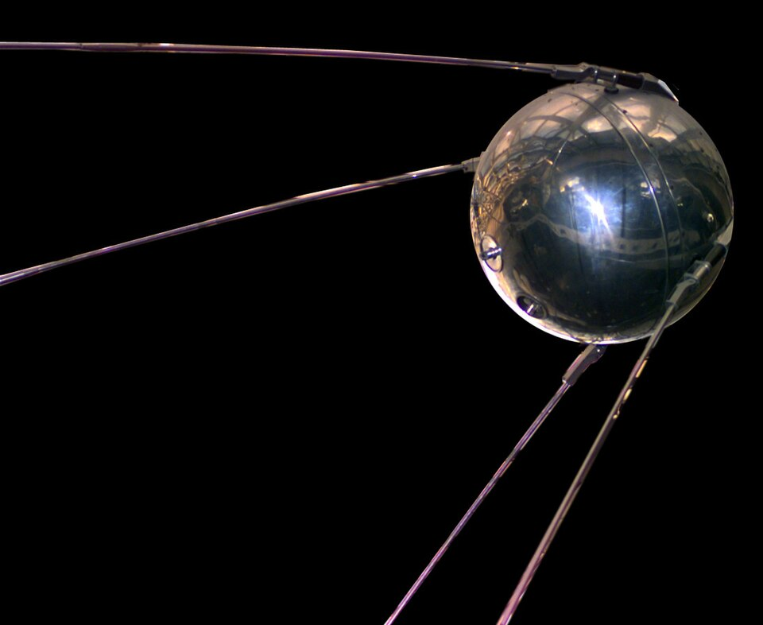
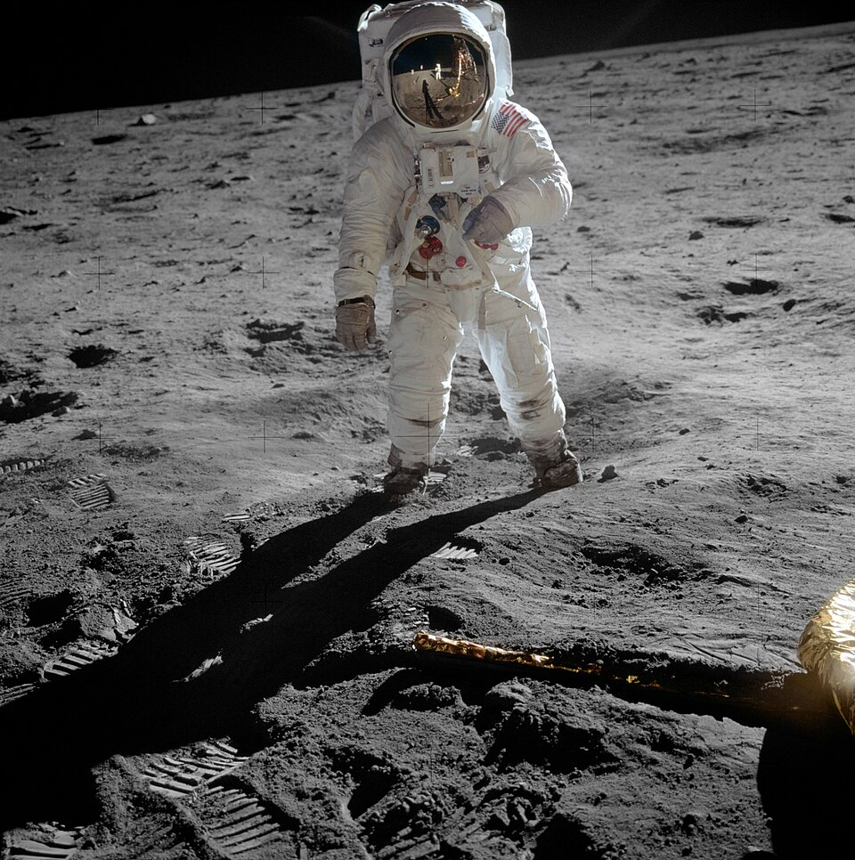
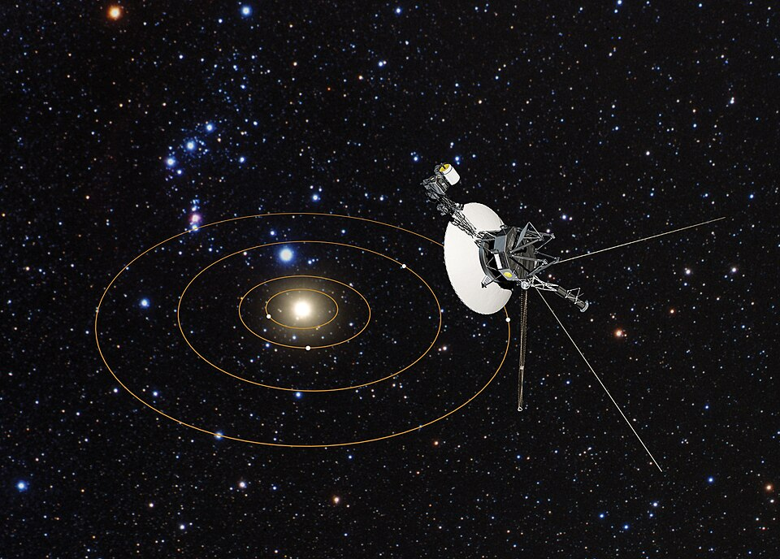
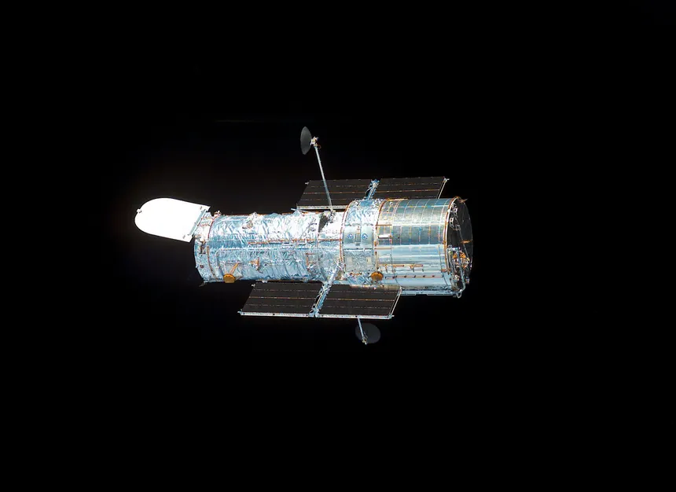
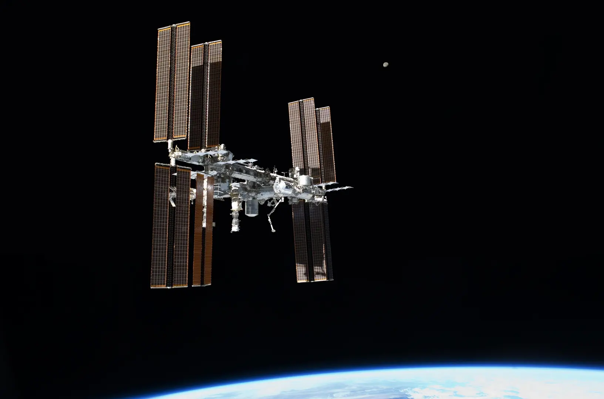
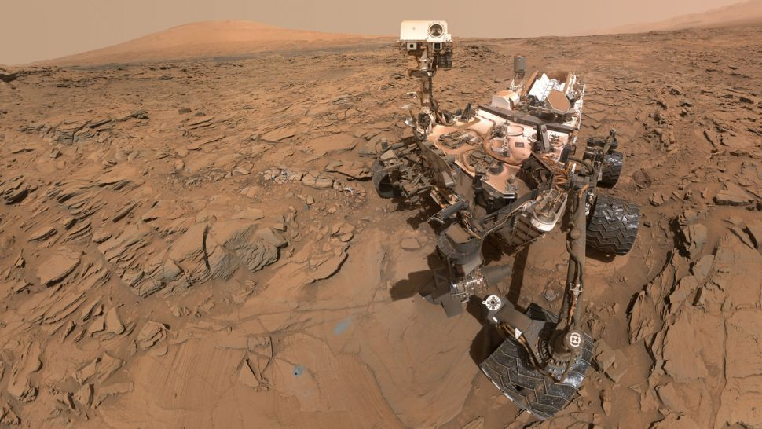

Os seres humanos não ficaram só olhando para o céu. Com satélites, foguetes, sondas e robôs, a gente foi descobrindo o espaço aos poucos.
1957

O primeiro satélite artificial da história, lançado pela União Soviética em 4 de outubro.
1961
O primeiro humano no espaço. Deu uma volta completa ao redor da Terra na nave Vostok 1.
1969

Neil Armstrong e Buzz Aldrin foram os primeiros humanos a pisar na Lua.
1977

Sonda lançada para estudar Júpiter e Saturno. Em 2012, chegou ao espaço entre as estrelas.
1990

Fica em órbita da Terra e tira fotos muito nítidas de estrelas e galáxias distantes.
2000

A primeira tripulação chegou a esse laboratório, construído por vários países juntos.
2006
O primeiro brasileiro a ir ao espaço, em uma missão à Estação Espacial Internacional.
2012

Um robô do tamanho de um carro pousou em Marte para estudar as rochas e o solo.